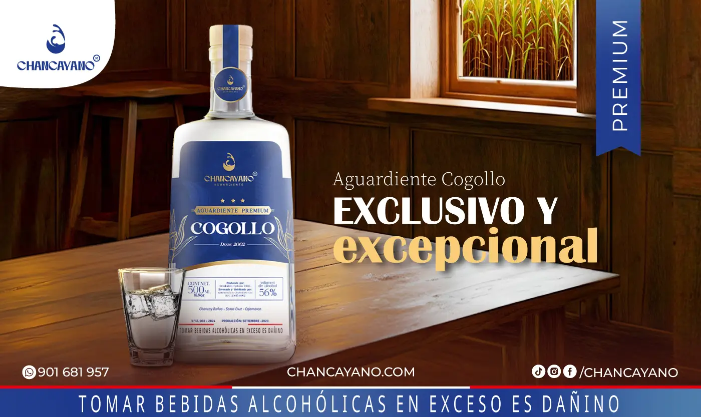

Aguardiente deChancay Baños
Aguardiente artesanal peruano de caña de azúcar, de Chancay Baños, Cajamarca. Destilados, macerados y cocktails en presentaciones de 50 ml a 500 ml.
- Desde 2002
- Santa Cruz, Cajamarca
- Pedidos por WhatsApp

Nuestras líneas
Cada línea abre su catálogo en la tienda.
Premium
Aguardiente Cogollo, 56 % vol.
Ver en la tienda
Destilados
Aguardiente tradicional de caña.
Ver en la tiendaMacerados
Macerado de quina en varias presentaciones.
Ver en la tienda
Cocktails
Fresa, café, maíz morado, maracumango y maracuyá.
Ver en la tienda
Nutrición
Jugo y miel de caña.
Ver en la tienda
Edición especial
Cocktail de maracumango, Carnaval de Cajamarca. 500 ml, 15 % vol. Desde S/ 35.00.
Ver edición especialAguardientes y presentaciones
Elige la botella con las flechas. Los precios son los publicados hoy en chancayano.com; cada presentación tiene su ficha.


Caña de Chancay Baños, Santa Cruz
Chancayano elabora su aguardiente con caña de azúcar de Chancay Baños, en la provincia de Santa Cruz, Cajamarca.
Cocktails de la casa
Cinco sabores en 187 ml y 500 ml. Elige el formato y el precio se actualiza con la ficha.


Tu botella de Chancayano, en la tienda
Pide en la tienda o escríbenos por WhatsApp.